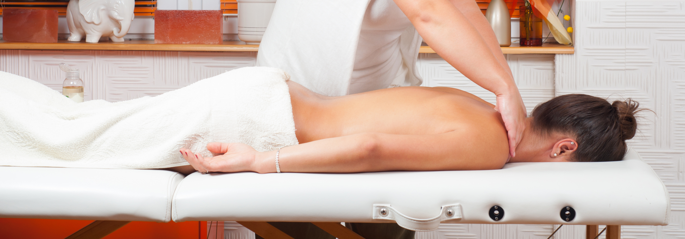
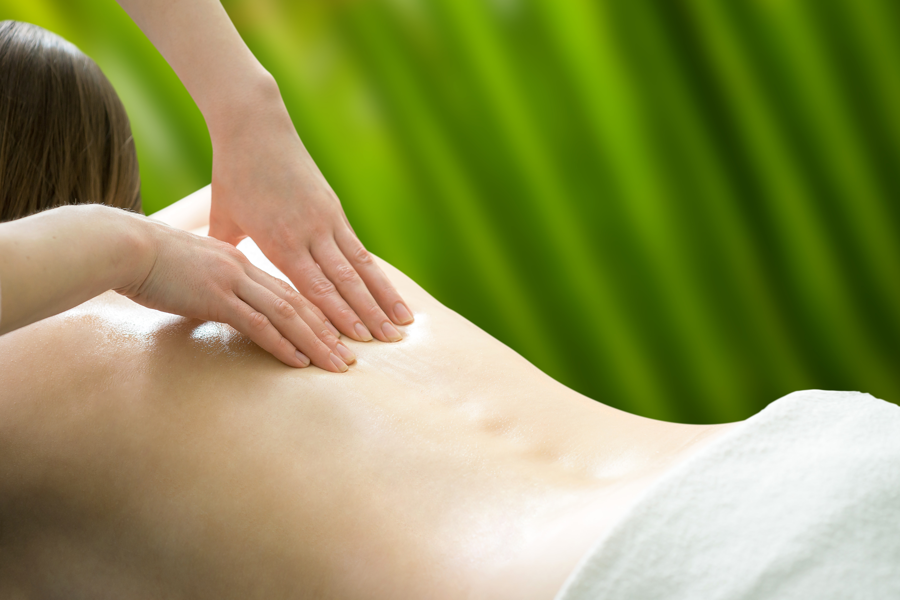

Swedish Massage
The most common type of massage is a Swedish massage. Swedish therapy can be both relaxing and energizing. Swedish massage focuses on muscle relaxation, targeting superficial muscles (rather than the connective tissues targeted in deep-tissue massage) and increasing blood circulation.
It involves soft, long, kneading strokes, as well as light, rhythmic, tapping strokes, on topmost layers of muscles in the direction of blood flow towards the heart – in order to open up your blood vessels and increase your blood flow. Increased blood flows mean you are getting more nutrients and oxygen and your body is removing toxins more efficiently.
Benefits of Swedish massage
- Improves immune system
- Calms your nervous system and promote a sense of relaxation and well being, reducing anxiety and tension in the body
- Relieves pain – notify your massage therapist about your pain points, so she or he can target those areas.
- Improves circulation - Massage dilates the blood vessels and widens the membrane pores in the body, improving your body’s ability to deliver fresh blood to muscles and organs.
- Relieves headache - Many headaches or migraines are a result of stress and/or poor circulation. Swedish Massage relieves the stress associated with tension headaches and improves circulation.
- Increase nutrient supply to muscles- by increasing circulation, Swedish Massage increases the blood supply and nutrients to the muscles.
- Improve Sleep. Studies show that getting a massage increases serotonin levels in the body, so you can fall asleep faster and stay asleep longer.
Contraindications of Swedish massage
- varicose veins and blood clots
- Cardiac conditions – severe high blood pressure that is unstable
- Inflammatory conditions
- Local or systemic infections(fever, inflamed lymph nodes, chicken pox, measles, influenza, scarlet fever, nephritis, hepatitis) - massage may be too stressful on the body and the immune system
- Haemophilia - deep pressure may bruise or cause tissue damage
- first three months of pregnancy
- Infectious skin diseases - may spread disease to yourself and other clients
If it`s your first time at the spa or you don`t get massage often, a Swedish massage is a good fit for beginners. If you have any doubts about whether or not a massage would be right for you, speak to a medical professional before booking a Swedish massage.
For more information about Swedish massage, please contact us or drop us an email. We will be happy to answer your questions, if we can.
Copyright © New to Massage